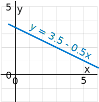
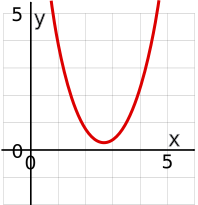
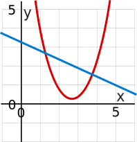
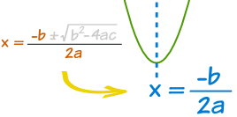
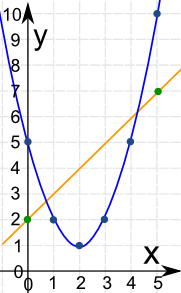
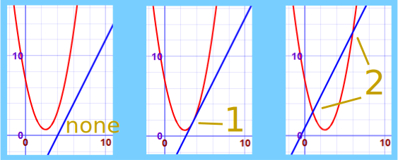
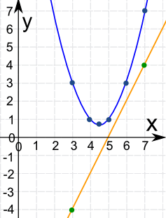
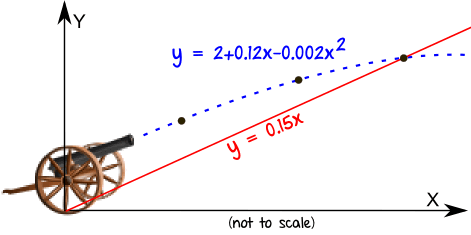
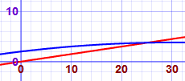
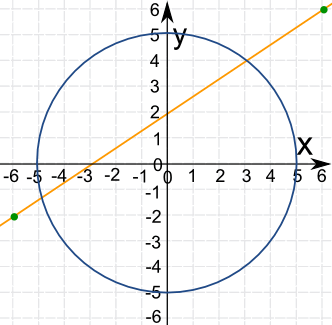

Solving Systems of Linear
and Quadratic Equations
Graphically
(also see Systems of Linear and Quadratic Equations)
|  | A Linear Equation is an equation of a line. |
|  | A Quadratic Equation is the equation of a parabola and has at least one variable squared (such as x2) |
|  | And together they form a System of a Linear and a Quadratic Equation |
A System of those two equations can be solved (find where they intersect), either:
- Using Algebra
- Or Graphically, as we will find out!
How to Solve Graphically
Easy! Plot both equations and see where they cross!
Plotting the Equations
We can plot them manually, or use a tool like the Function Grapher.
To plot them manually:
- make sure both equations are in "y=" form
- choose some x-values that will hopefully be near where the two equations cross over
- calculate y-values for those x-values
- plot the points and see!
Choosing Where to Plot
But what values should we plot? Knowing the center will help!
Taking the quadratic formula and ignoring everything after the ± gets us a central x-value:

Then choose some x-values either side and calculate y-values, like this:
Example: Solve these two equations graphically to 1 decimal place:
- y = x2 − 4x + 5
- y = x + 2
Find a Central X Value:
The quadratic equation is y = x2 − 4x + 5, so a = 1, b = −4 and c = 5
| central x = | −b | = | −(−4) | = | 4 | = 2 |
| 2a | 2×1 | 2 |
Now Calculate Values Around x=2
x |
Quadratic x2 − 4x + 5 |
Linear x + 2 |
|---|---|---|
| 0 | 5 | 2 |
| 1 | 2 | |
| 2 | 1 | |
| 3 | 2 | |
| 4 | 5 | |
| 5 | 10 | 7 |
(We only calculate first and last of the linear equation as that is all we need for the plot.)
Now Plot Them:

We can see they cross at about x = 0.7 and about x = 4.3
Let us do the calculations for those values:
x |
Quadratic x2 − 4x + 5 |
Linear x + 2 |
|---|---|---|
| 0.7 | 2.69 | 2.8 |
| 4.3 | 6.29 | 6.2 |
Yes they are close.
To 1 decimal place the two points are (0.7, 2.8) and (4.3, 6.2)
There Might Not Be 2 Solutions!
There are three possible cases:
- No real solution (happens when they never intersect)
- One real solution (when the straight line just touches the quadratic)
- Two real solutions (like the example above)

Time for another example:
Example: Solve these two equations graphically:
- 4y − 8x = −40
- y − x2 = −9x + 21
How do we plot these? They are not in "y=" format!
First make both equations into "y=" format:
Linear equation is: 4y − 8x = −40
Quadratic equation is: y − x2 = −9x + 21
Now Find a Central X Value:
The quadratic equation is y = x2 − 9x + 21, so a = 1, b = −9 and c = 21
| central x = | −b | = | −(−9) | = | 9 | = 4.5 |
| 2a | 2×1 | 2 |
Now Calculate Values Around x=4.5
x |
Quadratic x2 − 9x + 21 |
Linear 2x − 10 |
|---|---|---|
| 3 | 3 | -4 |
| 4 | 1 | |
| 4.5 | 0.75 | |
| 5 | 1 | |
| 6 | 3 | |
| 7 | 7 | 4 |
Now Plot Them:

They never cross! There is no solution.
Real World Example
Kaboom!
The cannon ball flies through the air, following a parabola: y = 2 + 0.12x - 0.002x2
The land slopes upward: y = 0.15x
Where does the cannon ball land?

Let's fire up the Function Grapher!
Enter 2 + 0.12x - 0.002x^2 for one function and 0.15x for the other.
Zoom out, then zoom in where they cross. You should get something like this:

By zooming in far enough we can find they cross at (25, 3.75)
Circle and Line
Example: Find the points of intersection to 1 decimal place of
- The circle x2 + y2 = 25
- And the straight line 3y - 2x = 6
The Circle
The "Standard Form" for the equation of a circle is (x-a)2 + (y-b)2 = r2
Where (a, b) is the center of the circle and r is the radius.
For x2 + y2 = 25 we can see that
- a=0 and b=0 so the center is at (0, 0),
- and for the radius r2 = 25 , so r = √25 = 5
We don't need to make the circle equation in "y=" form, as we have enough information to plot the circle now.
The Line
First put the line in "y=" format:
To plot the line, let's choose two points either side of the circle:
- at x = −6, y = (2/3)(−6) + 2 = −2
- at x = 6, y = (2/3)(6) + 2 = 6
Now plot them!

We can now see that they cross at about (-4.8, -1.2) and (3.0, 4.0)
For an exact solution see Systems of Linear and Quadratic Equations